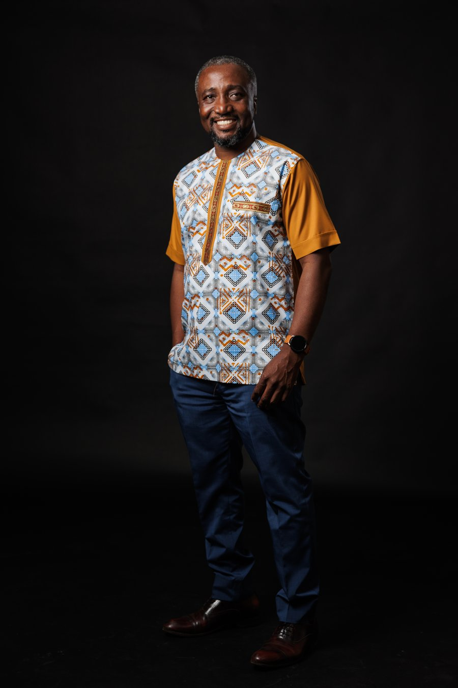

Born in Takoradi, in Ghana's Western Region, I have spent my career in the narrow space between what a government mandates, what a market will pay for, and what technology can actually deliver. That space is where most digital transformation efforts quietly fail. It is also where I have built my reputation.

I read Computer Science at Ashesi University, graduating into a Ghana where mobile money was not yet a category and where moving money between a bank and a customer could take a thirty-minute round trip through a momo agent. In 2007, alongside my co-founders, I started DreamOval, one of West Africa's first indigenous fintech companies, with a pre-Stanbic Zenith Bank Visa acquiring relationship and a home-grown iWallet product that began as a university thesis project.
The early architecture absorbed real chargeback exposure and real operational fragility before the pieces fit together. By 2011, scratch-card and Airtel Money/Zap rails matured enough to support a genuine commercial launch. By 2016, DreamOval had partnered with Stanbic Bank Ghana to launch Slydepay, one of Ghana's pioneering consumer digital payments platforms, and had expanded the product into Zimbabwe. As CEO, I led the company's technical and commercial teams in delivering digital banking infrastructure for more than five million bank accounts across GCB Bank, ADB Bank, Fidelity Bank, Stanbic Bank, and Sovereign Bank.
DreamOval, now Sevn Group, today processes more than a billion dollars in transactions annually and was independently valued at GHS 345,018,846 by Fincap Securities in January 2025. Along the way, the company built CocoaLink, a mobile agricultural advisory platform reaching 45,000+ cocoa farmers across 1,700 villages in partnership with the Hershey Company, the World Cocoa Foundation, and the Ghana Cocoa Board, lifting crop yields by 45.6%. The programme was named a P3 Impact Award Finalist at the Concordia Summit in New York, cited by the US State Department, and featured by name in Harvard Business Review.
In 2018, I stepped back from DreamOval's CEO role and was appointed CEO of the Ghana Chamber of Technology, the country's premier technology industry association. There, I led private-sector consultation that fed directly into the drafting of Ghana's Payment Systems and Services Act, the licensing regime that now governs a digital payments market processing an estimated $384.7 billion a year. I served as a member of the Bank of Ghana's Payment Systems Advisory Committee, chaired by the Governor, functioning as the primary liaison between Ghana's technology private sector, the central bank, and government.
What followed was a sequence of increasingly senior architecture roles at the national level: Lead Architect of Ghana's National Cashless Economy Programme, contracted by name by the United Nations Capital Development Fund; National Digital Economy Programme Director at Ghana's Ministry of Communications and Digitalisation; and, from December 2021, Principal Architect of Ghana's National Artificial Intelligence Strategy 2022–2033, co-authored with The Future Society at the Harvard Kennedy School and GIZ Germany, one of the first comprehensive national AI strategies developed in West Africa.
I also chaired the Technology Track of the Ghana–Singapore Financial Trust Corridor, a bilateral digital financial interoperability framework between the Monetary Authority of Singapore and the Bank of Ghana, and co-authored the Ghana Integrated Digital Transformation Blueprint, for which I was designated Principal Architect by the Ministry of Communications & Digitalisation. The blueprint is now referenced as foundational infrastructure in the World Bank's $200 million Ghana Digital Acceleration Project.
In 2019, I founded Heritors Labs, the platform through which I now operate across Ghana and the United States. As Principal Investigator, I was awarded USD 1.09 million across two phases of the UK FCDO's RISA Fund (via Chemonics), one of the largest competitive research commercialisation grants awarded to an individual African-led firm, directing a portfolio of national policy frameworks and blueprints deployed across five African countries. I originated the Innovation Market Value Chain Map (IMVCM) and the Research Innovation Socialisation, Communication and Marketing (RISCAM) framework as the architecture for the Innovation Trust Corridor, a commercialisation concept intended to span Ghana, Kenya, Uganda, Nigeria, and South Africa under UK Government funding. That corridor has not yet been deployed across those countries.
I was contracted by MTN Ghana under a formal consultancy agreement to lead a business transformation programme across the telecom's nine Channel Partners, and by STEPI (the Korean Institute of Science and Technology Policy) to design the master plan for the Korea–Ghana Innovation and Research Centre. I hosted and delivered the keynote address at the inaugural Africa Research and Innovation Commercialisation Summit (ARICS) 2025, covered by Pulse Kenya and Business Insider Africa.
Alongside this, I hold a smaller, second portfolio of earlier-stage ventures under the Heritors umbrella, at various stages of build. They take up less of my time than the advisory and policy work above; detail on each is on the Track Record page.
My writing keeps returning to one argument: that the countries and companies who succeed at digital transformation are not the ones who move fastest, but the ones who get the sequencing and the architecture right before they scale. In my essay on Ghana's payment systems history, I distinguish between the layer that distributes technology (getting it into people's hands) and the layer that issues and governs it (deciding who is allowed to build, and under what rules), arguing that most transformation programmes get the first right and the second wrong, and that self-correction capacity, not perfect initial design, is the real compounding advantage.
It is the same lens I bring whether the brief is a fintech platform, a national AI strategy, or a boardroom decision, and it is why I have never treated product development as separate from policy work. The UX and platform-architecture engagements, directing human-centred digital experience strategy for GFA Consulting Group's BMZ-funded programme, and leading platform development for GGTI, sit on the same continuum as the national blueprints and the regulatory frameworks. Building the thing and governing the thing are the same discipline, viewed from different altitudes. That combination, not any single credential, is the position I occupy: the point where product, policy, and capital have to reconcile with one another.
Post-Graduate Programme, University of Texas at Austin, McCombs School of Business
Certificate, Stanford SEED Program (Scalable, Efficient, Effective, and Durable Enterprise), Stanford Graduate School of Business
Ashesi University, Accra: Ashesi '06 Alumni; Adjunct Faculty, Innovation & Entrepreneurship, Academic City University College